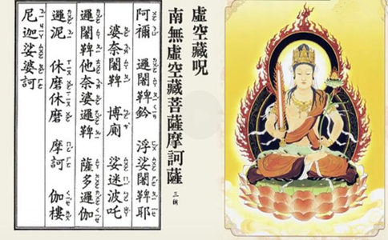

| ā | nǐ, | luó | shé | pí. | qián | fú | suō | shé | pí. |
| 阿 | 袮, | 逻 | 阇 | 鞞. | 钤 | 浮 | 娑 | 阇 | 鞞. |
| yē | pó | nài | shé | pí. | bó | cè, | suō | mí. |
| 耶 | 婆 | 奈 | 阇 | 鞞. | 博 | 厕, | 娑 | 迷. |
| bō | zhà | luó | shé | pí. | tuō | nài | pó | luó | pí. |
| 波 | 吒 | 逻 | 阇 | 鞞. | 他 | 奈 | 婆 | 逻 | 鞞. |
| sà | duō | luó | qié | luó | ní. | xiū | mó | xiū | mó. |
| 萨 | 多 | 逻 | 伽 | 逻 | 泥. | 休 | 磨 | 休 | 磨. |
| mó | hē. | qié | lóu | ní | jiā. | suō | pó | hē. |
| 摩 | 诃. | 伽 | 楼 | 尼 | 迦. | 娑 | 婆 | 诃. |
阿：（ā啊）袮（nǐ你）：祢：读作（nǐ你）属于古音，而今音为（mí迷）。
阇：读作（shé蛇），有的方音读“萨”。
鞞：发音（pí皮），还有其他三种读法：（pí皮）、（bǐ比）、（bǐng丙）。这里念（pí皮）比较合适。因鞞通毗，“鞞杀社”，也译成“毗煞社”；“阿鞞跋致”，也译成“阿毗跋致”；“鞞嚧社那”，也译成“毗卢舍那”。（见《佛学大辞典》。）
耶：读（yē噎）。另读（yě也）
厕：读作（cè测），有的方音读“次”。
吒：读音（zhà乍），不读今音（zhā）。
伽：读（qié茄），有的地方读“斜”。（应读ga，梵文中没有qié茄音）
磨：读作（mó模），有的方音读成“我”。
诃：读音为（hē呵），有的方音读“呼”。
迦：读（jiā加）。（Mahakarunika 摩诃伽楼尼迦，意为大悲）
附：虚空藏菩萨咒唱诵